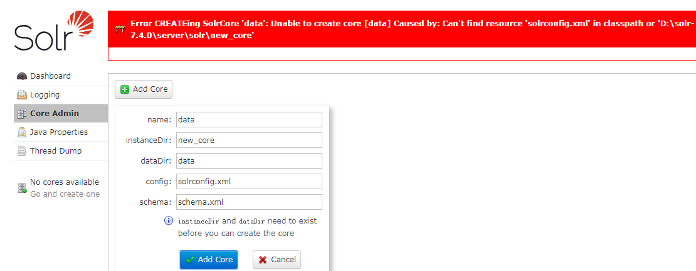
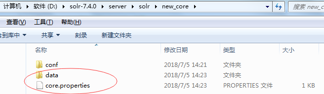

什么是Solr
概述
Solr 是一个开源搜索平台，用于构建搜索应用程序。它建立在 Lucene (全文搜索引擎)之上。Solr 是企业级的，快速的和高度可扩展的。使用 Solr 构建的应用程序非常复杂，可提供高性能。
为了在 CNET 网络的公司网站上添加搜索功能，Yonik Seely 于 2004 年创建了 Solr。并在 2006 年 1 月，它成为 Apache 软件基金会下的一个开源项目。并于2016年发布最新版本 Solr 6.0，支持并行SQL查询的执行。
Solr 可以和 Hadoop 一起使用。由于 Hadoop 处理大量数据，Solr 帮助我们从这么大的源中找到所需的信息。不仅限于搜索，Solr 也可以用于存储目的。像其他 NoSQL 数据库一样，它是一种非关系数据存储和处理技术。
总之，Solr 是一个可扩展的，可部署，搜索/存储引擎，优化搜索大量以文本为中心的数据库。
Apache Solr 特点
Solr 是 Lucene 的 Java API 的包装。因此，使用 Solr，可以利用 Lucene 的所有功能。
- Restful APIs − 要与 Solr 通信，并非一定需要有 Java 编程技能。相反，您可以使用 RESTful 服务与它通信。可使用文件格式(如XML，JSON和.CSV)在 Solr 中作为输入文档，并以相同的文件格式获取结果。
- 全文搜索 - Solr 提供了全文搜索所需的所有功能，例如令牌，短语，拼写检查，通配符和自动完成。
- 企业准备 - 根据企业/组织的需要，Solr 可以部署在任何类型的系统(大或小)，如独立，分布式，云等。
- 灵活和可扩展 - 通过扩展 Java 类并相应配置，可以轻松地定制 Solr 的组件。
- NoSQL 数据库 - Solr 也可以用作大数据量级的 NOSQL 数据库，可以沿着集群分布搜索任务。
- 管理界面 - Solr 提供了一个易于使用，用户友好，功能强大的用户界面，使用它可以执行所有可能的任务，如管理日志，添加，删除，更新和搜索文档。
- 高度可扩展 - 在使用 Solr 与 Hadoop 时，我们可以通过添加副本来扩展其容量。
- 以文本为中心并按相关性排序 - Solr 主要用于搜索文本文档，结果根据与用户查询的相关性按顺序传送。
与 Lucene 不同，在使用 Apache Solr 时，可不需要具有 Java 编程技能。它提供了一个完整的准备部署服务，以构建一个自动完成的搜索框，Lucene 是不提供的。 使用 Solr 可以扩展，分配和管理大规模(大数据)应用程序的索引。
什么是搜索引擎
搜索引擎是指一个庞大的互联网资源数据库，如网页，新闻组，程序，图像等。它有助于在万维网上定位信息。用户可以通过以关键字或短语的形式将查询传递到搜索引擎中来搜索信息。然后搜索引擎搜索其数据库并向用户返回相关链接。
搜索引擎组件
一般来说，搜索引擎有三个基本组件
- Web爬虫 - Web爬虫也称为蜘蛛或机器人。 它是一个收集网络信息的软件组件。
- 数据库 - Web上的所有信息都存储在数据库中。它们包含大量的 Web 资源。
- 搜索接口 - 此组件是用户和数据库之间的接口。它帮助用户搜索数据库。
搜索引擎是如何工作的？
任何搜索应用程序都需要执行以下一些或全部操作
| 步骤 | 标题或名称 | 描述 |
|---|---|---|
| 1 | 获取原始内容 | 任何搜索应用程序的第一步是收集要进行搜索的目标内容 |
| 2 | 构建文档 | 从原始内容构建文档，让搜索应用程序可以很容易地理解和解释 |
| 3 | 分析文档 | 在索引开始之前，将对文档进行分析 |
| 4 | 索引文档 | 当文档被构建和分析后，下一步是对它们建立索引，以便可以基于特定键而不是文档的全部内容来检索该文档。索引类似于在书开始页或末尾处的目录索引，其中常见单词以其页码显示，使得这些单词可以快速跟踪，而不是搜索整本书 |
| 5 | 用于搜索的用户接口 | 当索引数据库就绪，应用程序可以执行搜索操作。 为了帮助用户进行搜索，应用必须提供用户接口，用户可以在其中输入文本并启动搜索过程 |
| 6 | 构建查询 | 当用户做出搜索文本的请求，应用程序应该使用该文本来准备查询对象，然后可以使用该查询对象来查询索引数据库以获得相关的细节 |
| 7 | 搜索查询 | 使用查询对象，检查索引数据库以获取相关详细信息和内容文档 |
| 8 | 渲染结果 | 当收到所需的结果，应用程序应决定如何使用其用户界面向用户显示结果 |
手动安装
环境
- solr，https://lucene.apache.org/solr/downloads.html或者http://archive.apache.org/dist/lucene/solr/
- ik-analyzer，https://github.com/magese/ik-analyzer-solr
solr
运行环境：solr需要java8环境，且需要在环境变量中添加 JAVA_HOME变量。
在solr5以前solr的启动都有tomcat作为容器，但是从solr5以后solr内部集成jetty服务器，可以通过bin目录中脚本直接启动。就是从solr5以后跟solr4最大的区别是被发布成一个独立的应用。
在solr5之后solr其实特别容易安装，有安装包，之后在解压，直接启动bin下solr，solr就这样完成的启动了。。
1 | D:\solr-7.7.0\bin>solr.cmd start |
即可正常访问：
ik-analyzer
分词技术就是搜索引擎针对用户提交查询的关键词串进行的查询处理后根据用户的关键词串用各种匹配方法进行分词的一种技术。
IKAnalyzer 是一个开源的，基于 Java 语言开发的轻量级的中文分词工具包，基于文本匹配，不需要投入大量人力进行训练和标注可以自定词典，方便加入特定领域的词语，能分出多粒度的结果
步骤
下载并解压IKAnalyzer
使用上面的下载地址下载IK，并解压，将IK目录下src/main/resources中的5个文件拷贝到Solr的\server\solr-webapp\webapp\WEB-INF\classes目录下（没有classes，自己创建）
1 | ① IKAnalyzer.cfg.xml |
将下载后的ik，打开所在目录，再有pom文件的目录，手动mvn 打包，打包后将jar拷贝到Solr的WEB-INF/lib目录下
配置IK中文分词器
schema文件在每个域中的conf文件夹中，配置ik中文分词器，需要为每个域单独配置。首先请创建core，修改后，重启生效。
schema中加入IK分词器配置
1 | <!-- ik分词器 --> |
core
core是Solr中的名词，相当于关系型数据库中的表，这里称之为域。在solr-ui界面不能直接创建core，需要在Solr项目目录结构中的/server/solr文件夹中创建一个新的文件夹。然后在ui界面创建core界面的instanceDir中输入，即可
创建solr核心core
- name：自定义的名字，建议和instanceDir保持一致
- instanceDir： solrhome目录下的实例类目
- dataDir：默认填data即可
- config：指定配置文件，new_core/conf/solrconfig.xml
- schema：指定schema.xml文件，new_core/conf/schema文件(实际上是managed-schema文件)
点击add

这里看到上面提示 无法找打solrconfig.xml文件。这里注意下：创建的instanceDir和dataDir 需存在，就是我们需在\server\solr 目录下先去创建目录
这里看到上面提示 无法找打solrconfig.xml文件。这里注意下：创建的instanceDir和dataDir 需存在，就是我们需在solr-7.4.0\server\solr 目录下先去创建目录
此目录下的conf文件我们可从server\solr\configsets\sample_techproducts_configs中复制
当创建与复制好后，我们在再页面上创建core 创建成功
创建成功后new_core目录下会生成你的core和一个properties文件

这个时候在去访问就可以添加上了。
推荐使用命令创建
先贴出官网怎么说的
首先打开dos命令窗口启动solr，启动成功后 输入 solr create -c test
点击回车执行，执行完成后会提示出 创建成功。
在server\solr目录下就会生成你所创建的core了
去浏览器验证查看 成功
Solr基本操作
功能界面
Dashboard
Logging
Core Admin

Thread Dump
Core
分析功能
修改 managed-schema 配置业务系统字段
需要用到的业务字段如下：
- 商品 ID
- 商品分类 ID
- 分类名称
- 商品名称
- 商品卖点
- 商品详情
由于 Solr 中自带 id 字段所以无需添加，其它字段需要手动添加 Solr 字段
1 | # 字段域 |

复制字段：一般搜索时需要制定某个字段，但有时我们想对某个关键字进行多个字段的同时搜索，这时复制字段解决了这个问题。在这个字段中搜索，相当于在每个字段中进行了搜索。
复制配置到容器并重启
1 | # 复制到容器 |
词效果图

维护功能
维护功能即对数据库的 CRUD 操作
添加索引库
1 | { |
测试查询

删除索引库
设置文档类型为 XML

根据 ID 删除
1 | <delete> |
根据查询删除
1 | <delete> |
查询功能
查询条件

说明：
- q：查询条件，*:* 为查询所有域，单独查询某个域如：
tb_item_title:手机 - fq: 过滤条件
- sort：排序条件
- start,rows：分页条件
- fl：字段列表返回域，如只希望返回
id - df：默认搜索域，如之前配置的复制域
tb_item_keywords
高亮显示


说明：上图意为在默认搜索域 tb_item_keywords 中搜索关键字 手机 并指定需要高亮显示的结果域 tb_item_title 以 红色 显示